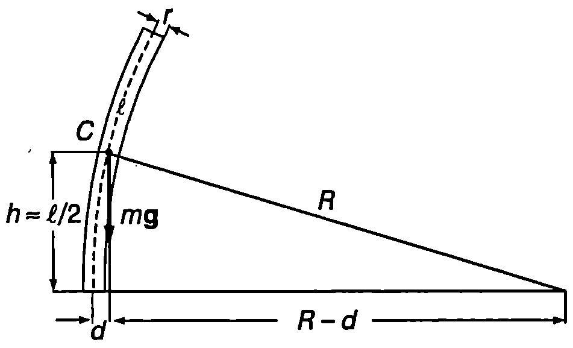

Под действие на различни външни сили биологичните материали се деформират и в тях възникват напрежения. Например при порив на вятъра стеблата на дърветата се огъват, при движение на животните костите на техните крайници се свиват, разтягат, усукват или огъват. Когато външна сила предизвиква еднородна деформация на свиване, разтягане или хлъзгане, механичното напрежение, което възниква в дадения биологичен материал, зависи единствено от напречното сечение на обекта, върху който е приложена силата (). При огъване или усукване обаче възникват нееднородни деформации и напрежения, които зависят не само от напречното сечение, но и от формата и размерите на обекта. Ще се спрем накратко на условията за устойчивост на механичните конструкции срещу различни деформации и как тези условия са спазени в структурата на биологичните обекти.
Устойчивост срещу огъване и усукване
Деформациите на усукване и огъване, как то и всички останали деформации, са еластични само в определени граници. Когато ъгълът на усукване или кривината на неутралната линия при огъване надминат някаква определена стойност, деформациите стават пластични и може да се предизвиква счупване или разрушаване на обекта. Съгласно с уравнения \eqref{eq:22.1} и \eqref{eq:22.6}
т.е. при определена стойност на приложения въртящ момент ъгълът на усукване и кривината на неутралната линия при огъване зависят не само от еластичните модули (или ), но и от геометрични фактори, каквито са полярният инерчен момент и инерчният момент на напречното сечение . Величините и за симетрични тела могат да се пресметнат теоретично. Техните стойности за пластинка и за цилиндър са дадени в таблица 23.1.
\begin{table}[t] \centering \begin{tabular}{|c|c|} \hline \begin{tabular}{@{}c@{}} \includegraphics[scale=0.25]{t23-1-1.png} \ Правоъгълно сечение \end{tabular} & \begin{tabular}{@{}c@{}} където коефициентът зависи от отношението . Например при , . \ . \end{tabular} \ \hline \begin{tabular}{@{}c@{}} \includegraphics[scale=0.25]{t23-1-2.png} \ Плътен цилиндър \end{tabular} & \begin{tabular}{@{}c@{}} \ . \end{tabular} \ \hline \begin{tabular}{@{}c@{}} \includegraphics[scale=0.25]{t23-1-3.png} \ Кух цилиндър \end{tabular} & \begin{tabular}{@{}c@{}} \ . \end{tabular} \ \hline \end{tabular} \captionof{table}[23.1]{ \label{table:23.1} Полярни инерчни моменти и инерчни моменти на напречното сечение за някои симетрични тела. } \end{table}
Колкото по-големи са инерчните моменти, и , толкова по-устойчива срещу усукване или огъване е дадена конструкция. Това се демострира от следния пример:
Пример 23.1
Бедрената кост на човека с приближение може да се приеме за кух цилиндър с външен радиус и вътрешен радиус . Ако към двата края на костта се приложат равни по големина и противоположни по посока въртящи моменти , костта се усуква на ъгъл . На какъв ъгъл би се усукала при същите условия плътна цилиндрична кост със същата дължина и маса?
Ако същите по големина въртящи моменти предизвикват огъване, сравнете кривините на неутралните оси за кухата и плътната кост. \end{psexample}
Решение
От формула \eqref{eq:23.1} следва, че ъгълът на усукване , за плътната кост е толкова пъти по-голям, колкото пъти е по-малък полярният инерчният момент на плътния цилиндър: Радиусът на плътната кост определяме от условието, че двете кости имат еднаква дължина и еднаква маса където е плътността на костното вещество. Приравняваме десните страни на двете равенства за масата на цилиндрите и получаваме
Двата полярни инерчни момента са (вж. табл.23.1)
Търсеното отношение е:
Следователно плътна кост със същата маса и дължина би се усукала на 1,7 пъти по-голям ъгъл. За да се усучат двете кости на един и същ ъгъл, към кухата кост трябва да се приложи 1,7 пъти по-голям въртящ момент.
Тъй като зависимостта на инерчните моменти на напречното сечение от радиусите за кух и за плътен цилидър е същата, както при полярните инерчни моменти (вж. табл. 23.1), полученият резултат за ъглите на усукване е в сила и за кривините на неутралните оси при огъване: по-силно ще се огъне плътната кост.
Напречното сечение на плътните части на двете кости е еднакво (имат еднакви маси и дължини), поради което равни по големина сили биха предизвикали еднакви деформации на разтягане или свиване. Деформациите на огъване и усукване обаче са различни.
От разгледания пример може да се направи изводът, че за постигане на лека и здрава конструкция, устойчива срещу деформации на усукване и огъване, градивният материал трябва да се разположи колкото е възможно по-далеч от оста на усукване или от неутралната ос при огъване. Фактът, че при еднаква маса и дължина кухите конструкции са по-устойчиви на усукване и огъване от плътните, намира своето отражение при еволюцията на живите организми. Костите на бозайниците и птиците са кухи. Особено тънки са стените на костите на някои птици и дребни бозайници. Например вътрешният радиус на раменната кост на лебеда е равен на 90% от външния радиус.
Критична височина на дърветата
Да разгледаме плътна еднородна цилиндрична колона с височина и радиус , която е поставена вертикално. Долният край на колоната е зазидан в хоризонталната опора. Да предположим, че под външно въздействие колоната е огъната под формата на дъга с радиус . (Фиг. \ref{fig:23.1}). При огъването еластичните сили създават в основата на колоната въртящ момент който се стреми да я изправи. ( е инерчният момент на напречното сечение на колоната.) От друга страна, силата на тежестта създава въртящ момент спрямо хоризонталната ос , стремящ се още по-силно да огъне колоната. Ако въртящият момент на еластичните сили е по-голям колоната ще се изправи, в противен случаи тя ще продължи да се огъва и ще се пречупи. Критичен е случаят, когато двата въртящи момента са равни
Когато огъването е малко (), центърът на тежестта на огънатата колона се намира на височина . Тогава с помощта на питагоровата теорема от правоъгълния триъгълник на Фиг. \ref{fig:23.1} определяме рамото на силата на тежестта: . Пренебрегваме и получаваме: .
Масата на цилиндъра е , където е плътността на материала. Заместваме и в равенството на моментите и определяме критичната височина на колоната
\begin{figure}[h!] \centering  \caption{} \label{fig:23.1} \end{figure}
Колона с дължина по-голяма от критичната дължина , в неустойчива срещу огъване. Ако външна сила, например порив на вятъра, предизвика някакво огъване на колоната, след това тя ще продължи да се огъва под действие на собствената си тежест (на въртящия момент на силата на тежестта). Еластичните сили не могат да спрат това огъване и колоната ще се пречупи. Например за дърво модулът на Юнг е около N/m, а плътността е около . Критичната дължина на дървена колона е
където радиусът и височината на колоната се измерват в метри. Например при m критичната височина е m, т.е. за да не се пречупи от собствената си тежест, вертикална дървена колона с радиус 10 cm трябва да има височина по-малка от 27 m.
Аналогична на уравнение \eqref{eq:23.3} зависимост
е в сила за кухи колони, за колони с форма на пресечен конус, както и за колони, които носят товар, само че в различните случаи коефициентът на пропорционалност има различни стойности.
Установено е, че опасността от пречупване при огъване е лимитиращ фактор, определящ пропорциите в размерите на някои растителни и животински видове. Изследванията на стеблата на различни видове дървета показват, че между радиусът и височината на стеблото има зависимост, която с приближение се описва от уравнение \eqref{eq:23.4}. Най-добро съвпадение с измерванията за много голям брой дървета в Северна Америка е получено при стойност на коефициента на пропорционалност .
Метод на подобието
В \ref{sec:12} използвахме най-елементарен вариант на метода на подобието, за да получим зависимостта на механичната мощност и скоростта на метаболизма (на обмяна на веществата) при бозайниците от тяхната маса . Според елементарния модел, обемът на всички органи на бозайника са пропорционални на някакъв характерен размер , а техните повърхности са пропорционални на . В действителност обаче редица части на тялото имат цилиндрична форма и, както показват изследванията, връзката между техния радиус и дължина приблизително съответства на условието за устойчивост срещу огъване, което се изразява с формула \eqref{eq:23.4}, т.е. . Да разгледаме например цилиндричен мускул, чиито радиус и дължина са свързани с това съотношение. Тогава масата на мускула, която е правопропорционална на обема на цилиндъра, е:
Напречното сечение на мускула е . Механичната мощност при съкращаване на мускула е , където е мускулната сила, а е скоростта, с която става съкръщаването. Мускулната сила е , където се механичното напрежение, което възниква при съкръщаване на мускула. Следователно . Изследванията показват, че при различните бозайници стойностите на и са приблизително еднакви, т.е. механичната мощност е правопропорционална на напречното сечение на мускула: . След като отчетем връзката между масата и радиуса , получаваме
Ако предположим същата зависимост за топлинната мощност, отделена в резултат на обмяната (метаболизма), ще получим правилната числена стойност 3/4 на степенния показател в закона на Клайбер \eqref{eq:12.2} на стр.74.
По аналогичен начин може да се определи как честотата на пулса зависи от масата на бозайника. Скоростта на метаболизма, както и необходимото за целта количество кислород, са пропорционални на . Масата на кръвта, която се изтласква от сърцето за един удар, е пропорционална на общата маса на кръвта, която от своя страна е пропорционална на масата на бозайника. Масата на изтласканата за една секунда кръв е пропорционална на и определя необходимото количество кислород, което трябва да постъпва в клетките за една секунда. Следователно , откъдето определяме: т.е. едрите бозайници имат по-малка честота на пулса. Например, ако масите на два бозайника се различават 16 пъти, по-големият ще има 2 пъти по бавен пулс. Експерименталните изследвания показват, че действително съществува подобна зависимост на честотата на пулса от масата на бозайниците.
Задачи
-
Две кости с еднакъв диаметър, но с различна дължина, се усукват под действие на сили с еднакви въртящи моменти. Едната кост се счупва, а другата остава здрава. Обяснете защо.
-
Два цилиндъра имат еднакви дължини и маси и са направени от един и същ материал. Радиусът на плътния цилиндър е равен на вътрешния радиус на кухия цилиндър. Определете отношението на ъгъла на усукване на кухия цилиндър към ъгъла на усукване на плътния цилиндър, когато към двата цилиндъра са приложени сили с еднакви въртящи моменти.
-
Критичната височина за колона с радиус cm e 7 m. Колко сантиметра трябва да е минималният радиус на колона с височина 20 m, направена от същия материал, за да бъде колоната устойчива при огъване?
-
Експериментално е установено, че критичната височина на определен вид дървета се изразява с формула \eqref{eq:23.4}, , където . Пресметнете критичната височина на дърво с радиус .
-
Две плътни колони с радиуси и са направени от един и същ материал. Определете отношението на височините на двете колони, ако е известно, че височината на всяка колона в два пъти по-малка от критичната височина.
-
Като използвате метода на подобието и направите подобни предположения, както при извода на закона на Клайбер на стр. 127, определете как топлинните загуби в околната среда зависят от масата на бозайниците. Съгласува ли се полученият от вас резултат с факта, че в полярните области обикновено не се срещат малки животни?
-
Да предположим, че между дължината и радиуса на костите съществува зависимостта , която се запазва при израстването на децата. Ако ъгълът на усукване, при който коста се счупва, в еднакъв за децата и възрастните, определете дали децата или възрастните са по-устойчиви срещу счупвания, предизвикани от сили на усукване. Разгледайте два случая:
а) въртящите моменти на силите, предизвикващи усукването, са равни по големина:
б) въртящите моменти на силите, предизвикващи усукването, са правопропорционални на радиуса на костите и на теглото на човека .